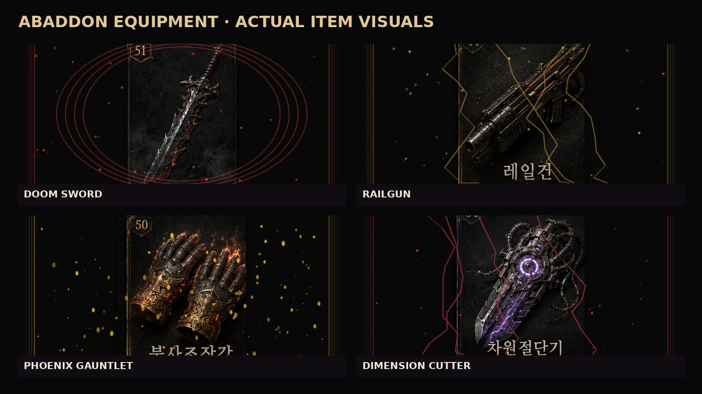
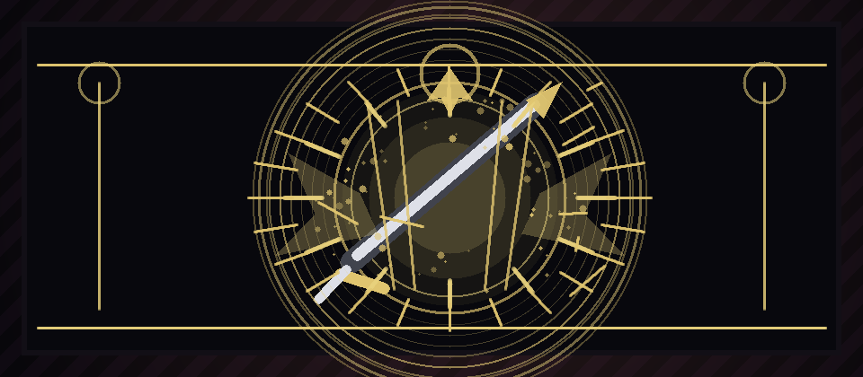
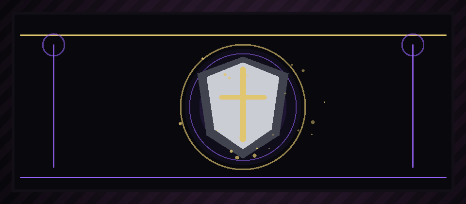
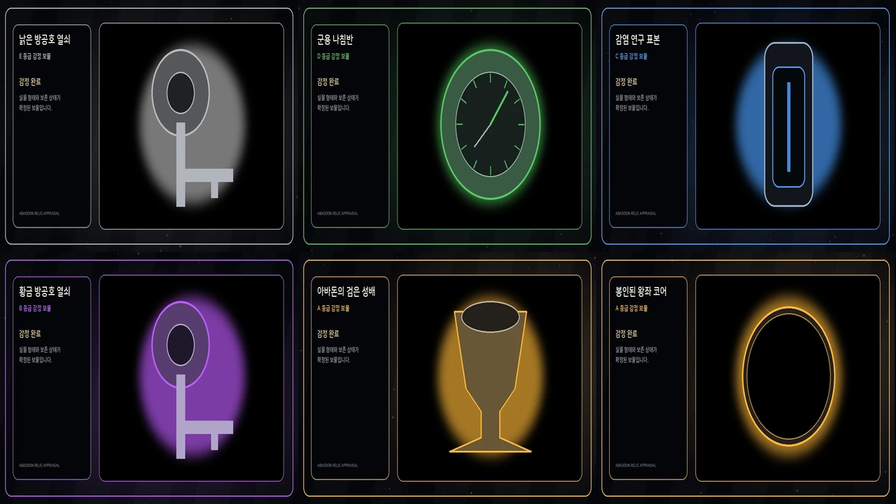

종말 네트워크 연동 대기
별도 Web Service 공개 주소를 연결하면 강화 성공과 공지가 이곳에 자동 표시됩니다.
낚시·광산·코인·도박 탐색·긴급 지원에 고유 장면 48장과 선택형 랜덤 인카운트를 연결했습니다. 하루 조우는 12회이며, 가끔 거래 가능한 영웅·전설 장비가 발견됩니다.
낚시·광산·코인·도박 탐색·지원 결과를 장면형 일러스트로 연결하고 기존 게임 규칙은 유지합니다.
별도 실시간 피드 Web Service를 15초마다 확인합니다. 운영·보안·문의 내용은 공개하지 않고, 봇 상태와 강화 이정표·운영진 공개 공지만 표시합니다.
별도 Web Service 공개 주소를 연결하면 강화 성공과 공지가 이곳에 자동 표시됩니다.
낚시·광산·코인·갈림길 탐색·긴급 지원이 각 결과에 맞는 별도 장면을 사용하며, 단순 상자 한 장을 반복하지 않습니다.

수변 성공·희귀 어종·줄 끊김·약탈자 보트·침수 보급 상자

광맥 발견·희귀 결정·낙석·폐광 가스·지하 기계 동력핵

스캐너 해독·희귀 자산·위조 신호·보급함·매복과 와이어 덫

보급 담당자·암시장 상인·버려진 배급소·사기 거래·특별 지원 물자
!낚시!광산!코인!코인탐색!탐색!돈주세요현재 장비 70종과 보물 20종을 이름별 전용 이미지로 연결했습니다. 감정 결과에는 실제 보물이 표시되고, 강화 단계가 높아질수록 해당 장비 이미지의 오라와 광륜이 확장됩니다.

ITEM_DB의 실제 장비 이름·등급·설명·전투력에 맞춘 개별 카드

+5·+7·+10·+12·+15·+18·+20에서 문양·광원·날개·오라 확장

성공은 안정된 결합 광원, 실패는 균열과 에너지 역류로 분리

E~A 등급의 실제 감정 보물 이름에 맞는 이미지 표시
!장비!장착!감정!강화!장비외형!제작!보물감정구성원이 남긴 안전한 지식은 운영진 검수를 거쳐 아바돈의 새로운 대화 기록이 됩니다.
말 걸기를 선택하면 모달 대신 현재 채널에 연속 대화가 열립니다. 이후 평소처럼 채팅하거나 아바돈 답변에 답글을 달아 대화를 이어갑니다.
구성원은 모달로 질문과 답변을 제출하고 운영진은 최대 25개씩 승인·반려합니다. 운영진 등록은 즉시 승인되며 개인정보·토큰·초대 링크는 차단합니다.
매일 바뀌는 서버 질문, 생존 밸런스 투표, 응원과 한마디를 제공하며 대화·승인 기억·질문 참여로 사용자별 교감 기록을 쌓습니다.
채널 이름과 주제를 보고 25종 규칙 중 하나를 추천합니다. 여러 채널을 선택하면 채널마다 20초 간격으로 작성·고정하고, 기존 메시지는 중복 없이 갱신합니다.
고철·광석·식량·고대파편·미감정 보물과 굴착 잔돈을 항목별 임베드에 표시합니다. 진행률 연출 뒤 현재 보유량과 남은 횟수까지 한눈에 확인합니다.
돈주세요는 1분·하루 50회이며 정상 지원 뒤 특별 교섭 버튼이 랜덤 등장합니다. 성공 시 기본 지원과 별도로 5,000~20,000 식량을 받습니다. 낚시·광산은 각각 독립 2분입니다.
검은 주파수와 백색 방주의 선택을 계승하는 시즌 3 캠페인과 4개의 신규 엔딩을 드롭다운으로 진행합니다.
Discord 연결, 데이터 파일, TTS, 서버 리뉴얼, 슬래시 명령, 홈페이지 피드와 봇 권한을 드롭다운으로 점검합니다.
TTS 채널·엔진·기본 목소리, 환영 안내, 운영 로그, 자동 이모지와 공개 피드를 명령 하나에서 관리합니다.
일반 사용자가 자신의 음성을 드롭다운으로 선택하며 다른 사람이나 서버 기본값은 변경하지 않습니다.
음성방에 들어간 상태에서 음성을 시험하고, 개인 설정을 초기화해 서버 기본값으로 돌아갈 수 있습니다.
환영 메시지에 공지사항·서버 기본규칙·가입 채널을 연결하고 `!가입 생존자` 시작법을 안내합니다.
TTS 채팅방의 메시지를 작성자의 음성방에서 읽되, 닉네임은 생략하고 채팅 내용만 낭독합니다. discord.py 2.7용 음성 런타임도 유지합니다.
명령 하나로 테마 미리보기·안전 계획·수동 백업·복구·빈 카테고리 정리를 선택합니다.
봇 상태와 공개 강화·공지 이벤트가 별도 피드 서비스에서 홈페이지로 안전하게 흐릅니다.
음성 성역과 정돈된 서버 메뉴를 공식 Discord에서 직접 확인하세요.